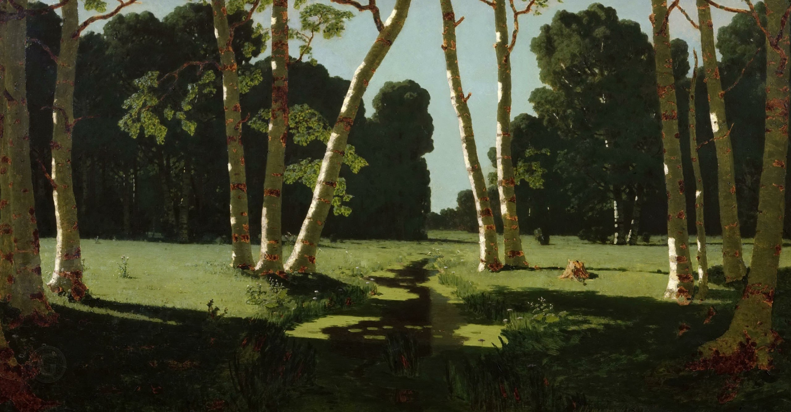

Архип Иванович Куинджи
Берёзовая роща, 1879

Холст, масло, 97 x 181 см
Государственная Третьяковская галерея, Москва. Приобретено П.М. Третьяковым у автора в 1879 г.
Картина Куинджи «Берёзовая роща» тоже стала открытием седьмой передвижной выставки 1879 года. Она вызвала громкий скандал, потому что вдруг, нежданно-негаданно, в одной из тогдашних газет появилась анонимная статья, где Куинджи обвиняли в шарлатанских трюках, недостойных художника, высказывались насмешки по поводу восторженной публики. Неожиданно выяснилось, что автором этой скандальной статьи, этого злостного памфлета на Куинджи был один из передвижников, а именно – Михаил Клодт. Клодт, как и Куинджи, был пейзажистом, поэтому он испытывал зависть к своему более успешному товарищу, и это побудило его написать эту статью, причём без подписи. Тем не менее его авторство выяснилось, и это шокировало участников «Товарищества». Многие в открытую высказали это Клодту, Куинджи потребовал, чтобы Клодта исключили из состава «Товарищества». Это решение не было принято, поэтому сам Куинджи вышел из состава передвижников, но вслед за этим вынужден был уйти и Клодт, столкнувшись с полным неприятием своего поступка со стороны других передвижников.